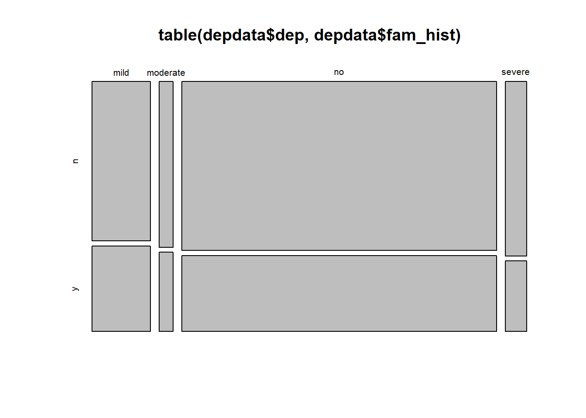

timehands <- read_csv("https://uoepsy.github.io/data/timehands.csv") |>
mutate(
isLeft = ifelse(handed=="left", "left", "other")
)
table(timehands$isLeft)
left other
12 88 This reading:
Just like we did with the various types of \(t\)-test, we’re going to continue with some more brief explainers of different basic statistical tests. The past few weeks have focused on tests for numeric outcome variables, where we have been concerned with the mean of that variable (e.g. whether that mean is different from some specific value, or whether it is different between two groups). We now turn to investigate tests for categorical outcome variables.
When studying categorical variables, we tend to be interested in counts (or “frequencies”), and these can be presented in tables:
timehands <- read_csv("https://uoepsy.github.io/data/timehands.csv") |>
mutate(
isLeft = ifelse(handed=="left", "left", "other")
)
table(timehands$isLeft)
left other
12 88 If we just have two categories, then our frequency table really can be summarised as a proportion. E.g., “the proportion who are left-handed”. We know that the other number (the proportion who are not left-handed) has to be 1-the proportion who are:
table(timehands$isLeft) |>
prop.table() # turn into proportions
left other
0.12 0.88 Really, these proportions are “the number of \(x\)’s out of \(n\) things”, and we often see this written as “\(k\) successes in \(n\) trials”. The reason for this is because it is built upon counting up a series of independent binary observations. The distribution of “\(k\) successes in \(n\) trials” is known as the Binomial distribution.
As an example, if we think of what probability distribution governs a single coin flip, it would look something like the Left hand plot in Figure 1. But if we are instead considering what governs the behaviour of “number of tails in 5 coin flips” then our probabilities of each possible outcome look like the Right hand panel.
The distribution of something that can just take one of two discrete values (i.e. a single binary outcome like one coin flip) is referred to as a “Bernoulli” probability distribution. A “distribution” here is just a way of expressing the probability of seeing different values, and we can write it mathematically if we are that way inclined:
\[
P(k) = p^k(1-p)^{1-k} \qquad \textrm{for } k \in \{0,1\}
\] This looks a bit nonsensical at first, but it’s actually just a complicated way of saying “the probability of seeing \(k = 1\) is the probability that \(k = 1\)”.
For instance, if we had a coin-flip, and we said that Tails is our “success” (and we give it the value 1) then the probability of seeing Heads and of seeing Tails is: \[
\begin{align}
\textrm{Probability of failure (Heads)} = P(0) &= 0.5^0(1-0.5)^{1-0} \\
&= 0.5^0(0.5)^{1} \\
&= 0.5 \\
\textrm{Probability of success (Tails)} = P(1) &= 0.5^1(1-0.5)^{1-1} \\
&= 0.5^1(0.5)^{0} \\
&= 0.5
\end{align}
\] When we move to thinking about the number of success in a set of trials, there we have to factor in the different ways in which we could see that number of success. For instance, if we had 3 coin flips, we could either see 0 Tails, 1 Tails, 2 Tails, or 3 Tails. There is only one way we could see “0 Tails”, but there are 3 different ways we could see “1 Tails” - we could have THH, HTH, or HHT!
The probability of \(k\) successes in \(n\) trials is the Binomial distribution, and is written as:
\[ P(k) = {n \choose k}p^k(1-p)^{n-k} \] Which can be read as: the probability of seeing \(k\) successes is “the number of ways in which we could see k successes in n trials” (this is the \({n \choose k}\) bit) multiplied by the probability of success in a single trial to the power of \(k\), multiplied by the probability of failure in a single trial to the power of \(n-k\).
To make more sense, let’s put it in the context of our “1 Tails in 3 coin flips”. The coin is fair, so the probability of a single Tails is 0.5 (so below we replace \(p\) with 0.5), and we saw just above that there are 3 ways that we can get 1 success in 3 trials (so the calculation \({3 \choose 1}\) becomes 3)
\[
\begin{align}
\text{Probabiltiy of 1 Tails in 3 flips} = P(1) &= {3 \choose 1}0.5^1(1-0.5)^{3-1} \\
&= {3 \choose 1}0.5^1(0.5)^{2} \\
&= {3 \choose 1}0.5 \times 0.25 \\
&= {3 \choose 1} 0.125 \\
&= 3 \times 0.125 \\
&= 0.375 \\
\end{align}
\]
We can actually check this in R using a handy function:
dbinom(x = 1, size = 3, prob = 0.5)[1] 0.375Returning to “the proportion of people who are left-handed”, the internet (and everything on there is true, of course) tells me that 10% of the population is left-handed. As we have 100 people in our dataset, our expectation of what we are likely to see from samples of 100 people (if the probability of being left-handed is 0.10) therefore looks something like Figure 2.
Much like the null hypothesis testing we have seen already concerning whether our observed mean is different from some hypothesised value (see Chapter 6 #one-sample-t-test), we can conduct a test of whether our observed sample proportion (12/100 = 0.12) is likely to have been drawn from a population where the true probability is 0.1:
table(timehands$isLeft)
left other
12 88 Either of these will work, and both will produce the same output:
binom.test(x = 12, n = 100, p = 0.1)
table(timehands$isLeft) |> binom.test(p = 0.1)
Exact binomial test
data: 12 and 100
number of successes = 12, number of trials = 100, p-value = 0.503
alternative hypothesis: true probability of success is not equal to 0.1
95 percent confidence interval:
0.0635689 0.2002357
sample estimates:
probability of success
0.12 In this case, the p-value is >.051, so we fail to reject the null hypothesis that the probability of being left-handed is 0.1.
While the binomials capture the distribution of a series of binary trials, what happens when we are interested in something that isn’t binary? There are lots of categorical variables that have more than two possible values. For example, handedness isn’t as simple as “Left vs Others”, we might have 3 categories:
table(timehands$handed)
ambi left right
4 12 84 Furthermore, we might have a slightly more nuanced question that involves two variables, rather than just one! For instance, we might be interested in whether left/right/ambidextrous proportions are different across people who prefer the morning or night.
In this case, with 2 variables, we have a 2-dimensional table (also referred to as a ‘contingency table’):
table(timehands$handed, timehands$ampm)
morning night
ambi 1 3
left 9 3
right 42 42So we want to be able to perform tests to examine things such as:
The test-statistics for these sort of tests (denoted \(\chi^2\), spelled chi-square, pronounced “kai-square”) are obtained by adding up the standardized squared deviations in each cell of a table of frequencies:
\[ \chi^2 = \sum_{all\ cells} \frac{(\text{Observed} - \text{Expected})^2}{\text{Expected}} \] where:
Just like the \(t\)-statistics we calculate follow \(t\)-distributions, the \(\chi^2\)-statistics follow \(\chi^2\) distributions! If you look carefully at the formula above, it can never be negative (because the value on top of the fraction is squared, and so is always positive). For a given cell of the table, if we observe exactly what we expect, then \(\text{(Observed - Expected)}^2\) becomes zero. The further away the observed count is from the expected count, the larger it becomes.
This means that under the null hypothesis, larger values are less likely. And the shape of our \(\chi^2\) distributions follow this logic. They have higher probability for small values, getting progressively less likely for large values. \(\chi^2\)-distributions also have a degrees of freedom, because with more cells in a table, there are more chances for random deviations between “observed and expected” to come in, meaning we are more likely to see higher test statistics when we have more cells in the table (and therefore more degrees of freedom). You can see the distribution of \(\chi^2\) statistics with different degrees of freedom in Figure 3 below.

Purpose
The \(\chi^2\) Goodness of Fit Test is typically used to investigate whether observed sample proportions are consistent with an hypothesis about the proportional breakdown of the various categories in the population.
Assumptions
Research Question: Have proportions of adults suffering no/mild/moderate/severe depression changed from 2019?
In 2019, it was reported that 80% of adults (18+) experienced no symptoms of depression, 12% experienced mild symptoms, 4% experienced moderate symptoms, and 4% experienced severe symptoms.
The dataset is accessible at https://uoepsy.github.io/data/usmr_chisqdep.csv contains data from 1000 people to whom the PHQ-9 depression scale was administered in 2022.
depdata <- read_csv("https://uoepsy.github.io/data/usmr_chisqdep.csv")
head(depdata)# A tibble: 6 × 3
id dep fam_hist
<chr> <chr> <chr>
1 ID1 severe n
2 ID2 mild n
3 ID3 no n
4 ID4 no n
5 ID5 no n
6 ID6 no n We can see our table of observed counts with the table() function:
table(depdata$dep)
mild moderate no severe
143 34 771 52 chisq.test()
We can perform the \(\chi^2\) test very easily, by simply passing the table to the chisq.test() function, and passing it the hypothesised proportions. If we don’t give it any, it will assume they are equal.
Note: the proportions must be in the correct order as the entries in the table!
This will give us the test statistic, degrees of freedom, and the p-value:
# note the order of the table is mild, moderate, no, severe.
# so we put the proportions in that order
chisq.test(table(depdata$dep), p = c(.12, .04, .8, .04))
Chi-squared test for given probabilities
data: table(depdata$dep)
X-squared = 9.9596, df = 3, p-value = 0.01891If the distribution of no/mild/moderate/severe depression were as suggested (80%/12%/4%/4%), then the probability that we would obtain a test statistic this large (or larger) by random chance alone is .019. With an \(\alpha = 0.05\), we reject the null hypothesis that the proportion of people suffering from different levels of depression are the same as those indicated previously in 2019.
\(\chi^2\) goodness of fit test indicated that the observed proportions of people suffering from no/mild/moderate/severe depression were significantly different (\(\chi^2(3)=9.96, p = .019\)) from those expected under the distribution suggested from a 2019 study (80%/12%/4%/4%).
We can examine where the biggest deviations from the hypothesised distribution are by examining the ‘residuals’:
chisq.test(table(depdata$dep), p = c(.12, .04, .8, .04))$residuals
mild moderate no severe
2.0996031 -0.9486833 -1.0253048 1.8973666 This matches with what we see when we look at the table of counts. With \(n=1000\), under our 2019 distribution, we would expect 800 to have no depression, 120 mild, 40 moderate, and 40 severe.
table(depdata$dep)
mild moderate no severe
143 34 771 52 The difference in the moderate “observed - expected” is 6, and the difference in the “no depression” is 29. But these are not comparable, because really the 6 is a much bigger amount of the expected for that category than 29 is for the no depression category. The residuals are a way of standardising these.
They are calculated as: \[ \text{residual} = \frac{\text{observed} - \text{expected}}{\sqrt{expected}} \]
First we calculate the observed counts:
depdata |>
count(dep)# A tibble: 4 × 2
dep n
<chr> <int>
1 mild 143
2 moderate 34
3 no 771
4 severe 52Let’s add to this the expected counts:
depdata |>
count(dep) |>
mutate(
expected = c(.12, .04, .8, .04)*1000
)# A tibble: 4 × 3
dep n expected
<chr> <int> <dbl>
1 mild 143 120
2 moderate 34 40
3 no 771 800
4 severe 52 40How do we measure how far the observed counts are from the expected counts under the null? If we simply subtracted the expected counts from the observed counts and then add them up, you will get 0. Instead, we will square the differences between the observed and expected counts, and then add them up.
One issue, however, remains to be solved. A squared difference between observed and expected counts of 100 has a different weight in these two scenarios:
Scenario 1: \(O = 30\) and \(E = 20\) leads to a squared difference \((O - E)^2 = 10^2 = 100\).
Scenario 2: \(O = 3000\) and \(E = 2990\) leads to a squared difference \((O - E)^2 = 10^2 = 100\)
However, it is clear that a squared difference of 100 in Scenario 1 is much more substantial than a squared difference of 100 in Scenario 2. It is for this reason that we divide the squared differences by the the expected counts to “standardize” the squared deviation.
\[ \chi^2 = \sum_{i} \frac{(\text{Observed}_i - \text{Expected}_i)^2}{\text{Expected}_i} \]
We can calculate each part of the equation:
depdata |>
count(dep) |>
mutate(
expected = c(.12, .04, .8, .04)*1000,
sq_diff = (n - expected)^2,
std_sq_diff = sq_diff/expected
)# A tibble: 4 × 5
dep n expected sq_diff std_sq_diff
<chr> <int> <dbl> <dbl> <dbl>
1 mild 143 120 529 4.41
2 moderate 34 40 36 0.9
3 no 771 800 841 1.05
4 severe 52 40 144 3.6 The test-statistic \(\chi^2\) is obtained by adding up all the standardized squared deviations:
depdata |>
count(dep) |>
mutate(
expected = c(.12, .04, .8, .04)*1000,
sq_diff = (n - expected)^2,
std_sq_diff = sq_diff/expected
) |>
summarise(
chi = sum(std_sq_diff)
)# A tibble: 1 × 1
chi
<dbl>
1 9.96The p-value for a \(\chi^2\) Goodness of Fit Test is computed using a \(\chi^2\) distribution with \(df = \text{nr categories} - 1\).
We calculate our p-value by using pchisq() and we have 4 levels of depression, so \(df = 4-1 = 3\).
pchisq(9.959583, df=3, lower.tail=FALSE)[1] 0.01891284Purpose
The \(\chi^2\) Test of Independence is used to determine whether or not there is a significant association between two categorical variables. To examine the independence of two categorical variables, we have a contingency table:
Family History of Depression
Depression Severity n y
mild 93 50
moderate 23 11
no 532 239
severe 37 15Assumptions
Research Question: Is severity of depression associated with having a family history of depression?
The dataset accessible at https://uoepsy.github.io/data/usmr_chisqdep.csv contains data from 1000 people to whom the PHQ-9 depression scale was administered in 2022, and for which respondents were asked a brief family history questionnaire to establish whether they had a family history of depression.
depdata <- read_csv("https://uoepsy.github.io/data/usmr_chisqdep.csv")
head(depdata)# A tibble: 6 × 3
id dep fam_hist
<chr> <chr> <chr>
1 ID1 severe n
2 ID2 mild n
3 ID3 no n
4 ID4 no n
5 ID5 no n
6 ID6 no n We can create our contingency table:
table(depdata$dep, depdata$fam_hist)
n y
mild 93 50
moderate 23 11
no 532 239
severe 37 15And even create a quick and dirty visualisation of this too:
plot(table(depdata$dep, depdata$fam_hist))
chisq.test()
Again, we can perform this test very easily by passing the table to the chisq.test() function. We don’t need to give it any hypothesised proportions here - it will work them out based on the null hypothesis that the two variables are independent.
chisq.test(table(depdata$dep, depdata$fam_hist))
Pearson's Chi-squared test
data: table(depdata$dep, depdata$fam_hist)
X-squared = 1.0667, df = 3, p-value = 0.7851If there was no association between depression severity and having a family history of depression, then the probability that we would obtain a test statistic this large (or larger) by random chance alone is 0.79. With an \(\alpha=.05\), we fail to reject the null hypothesis that there is no association between depression severity and family history of depression.
A \(\chi^2\) test of independence indicated no significant association between severity and family history (\(\chi^2(3)=1.07, p=.785\)), suggesting that a participants’ severity of depression was not dependent on whether or not they had a family history of depression.
We can see the expected and observed counts:
chisq.test(table(depdata$dep, depdata$fam_hist))$expected
n y
mild 97.955 45.045
moderate 23.290 10.710
no 528.135 242.865
severe 35.620 16.380chisq.test(table(depdata$dep, depdata$fam_hist))$observed
n y
mild 93 50
moderate 23 11
no 532 239
severe 37 15We have our observed table:
table(depdata$dep, depdata$fam_hist)
n y
mild 93 50
moderate 23 11
no 532 239
severe 37 15To work out our expected counts, we have to do something a bit tricky. Let’s look at the variables independently:
table(depdata$fam_hist)
n y
685 315 table(depdata$dep)
mild moderate no severe
143 34 771 52 With \(\frac{315}{315+685} = 0.315\) of the sample having a family history, then if depression severity is independent of family history, we would expect that 0.315 of each severity group to have a family history of depression. For example, for the mild depression, with 143 people, we would expect \(143 \times 0.315 = 45.045\) people in that group to have a family history of depression.
For a given cell of the table we can calculate the expected count as \(\text{row total} \times \frac{\text{column total}}{\text{samplesize}}\).
Or, quickly in R:
obs <- table(depdata$dep, depdata$fam_hist)
exp <- rowSums(obs) %o% colSums(obs) / sum(obs)
exp n y
mild 97.955 45.045
moderate 23.290 10.710
no 528.135 242.865
severe 35.620 16.380Now that we have our table of observed counts, and our table of expected counts, we can actually fit these into our formula to calculate the test statistic:
sum ( (obs - exp)^2 / exp )[1] 1.066686The p-value is computed using a \(\chi^2\) distribution with \(df = (\text{nr rows} - 1) \times (\text{nr columns} - 1)\).
Why is this? Well, remember that the degrees of freedom is the number of values that are free to vary as we estimate parameters. In a table such as the one below, where we have 4 rows and 2 columns, the degrees of freedom is the number of cells in the table that can vary before we can simply calculate the values of the other cells (where we’re constrained by the need to sum to our row/column totals).
We have 4 rows, and 2 columns, so \(df = (4-1) \times (2-1) = 3\).
pchisq(1.066686, df = 3, lower.tail=FALSE)[1] 0.7851217the conventional \(\alpha\) level used in psychology↩︎